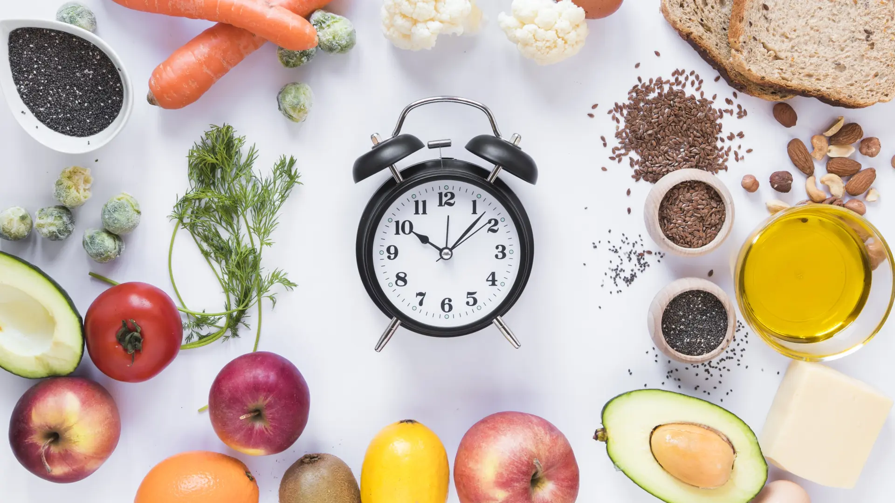

Opinión: ¿Es mejor comer 3 veces o 5 al día?
En esta opinión, analizamos si es mejor comer 3 veces al día (desayuno, almuerzo, cena) o 5 veces (incluyendo snacks). Basado en estudios y experiencias, exploramos pros, contras y qué funciona mejor para cada persona.
Ventajas de Comer 3 Veces al Día
- Simplicidad: Fácil de planificar y seguir en rutinas ocupadas.
- Menos tentaciones: Reduce la oportunidad de comer en exceso entre comidas.
- Mejor digestión: Permite al cuerpo descansar y procesar alimentos completamente.
- Adecuado para pérdida de peso: Menos comidas pueden ayudar a crear déficit calórico.
Ventajas de Comer 5 Veces al Día
- Control del apetito: Snacks evitan picos de hambre y antojos.
- Estabiliza azúcar en sangre: Previene caídas de energía y mejora concentración.
- Mejor absorción de nutrientes: Porciones más pequeñas facilitan la digestión.
- Ideal para atletas: Mantiene energía constante durante entrenamientos intensos.
Factores a Considerar
No hay una respuesta universal; depende de tu estilo de vida, metas y metabolismo. Estudios muestran que ambos enfoques funcionan si se mantiene un balance calórico. En mi opinión, 5 comidas al día es mejor para la mayoría, especialmente si eres activo o tienes hambre frecuente, pero 3 veces es suficiente si prefieres simplicidad.
| Perfil | Recomendación |
|---|---|
| Persona sedentaria | 3 comidas al día |
| Atleta o trabajador activo | 5 comidas al día |
| Con diabetes | 5 comidas para controlar glucosa |
Consejos Finales
Escucha a tu cuerpo: Si sientes hambre, come. Combina con alimentos nutritivos y evita snacks procesados. Consulta a un nutricionista para personalizar. ¡La clave es la consistencia, no la frecuencia!